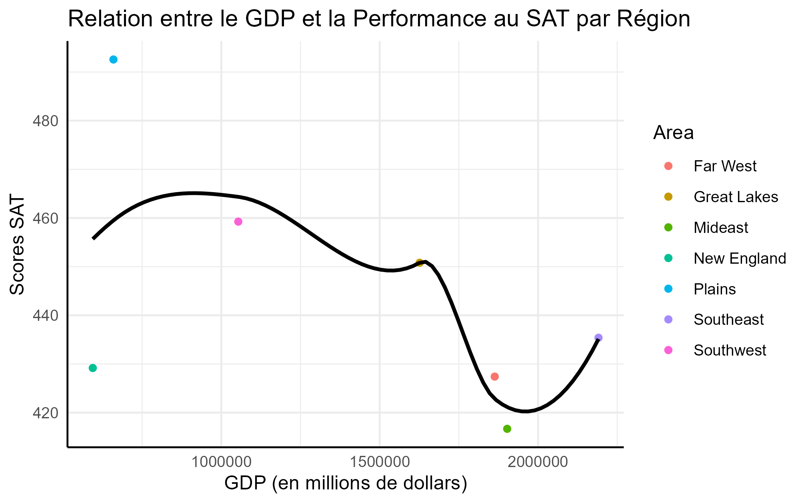
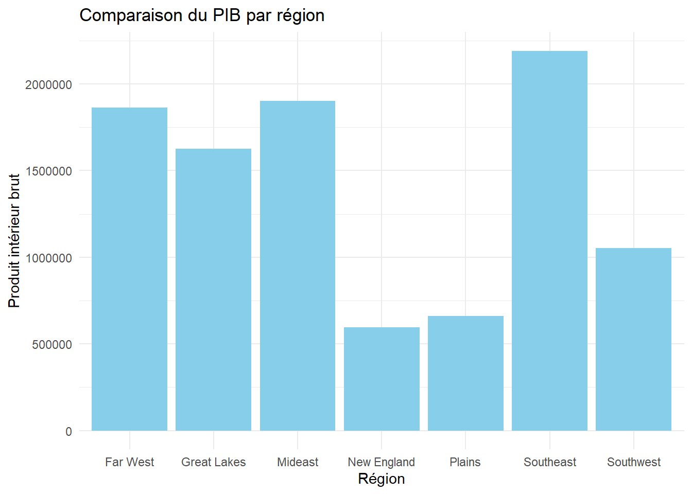
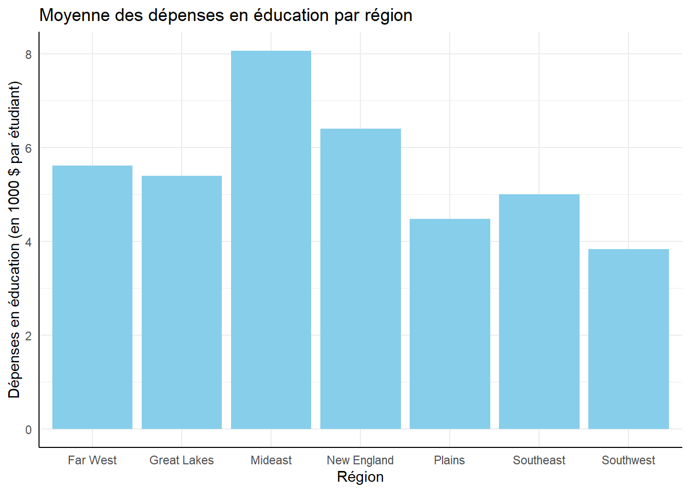
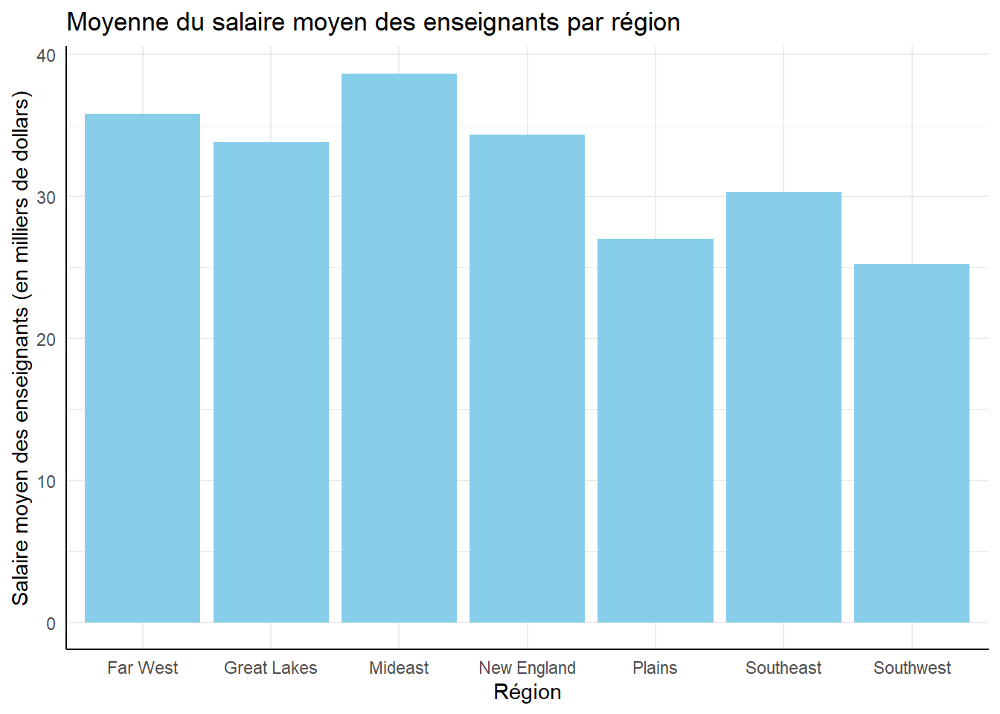
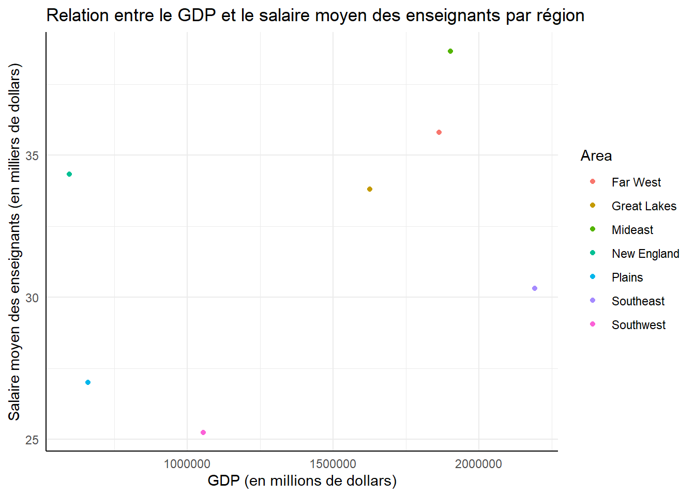

L’éducation et l’économie sont deux piliers essentiels du développement sociétal, et leur interrelation peut offrir des perspectives précieuses pour comprendre les dynamiques régionales. Cette étude vise à explorer les liens entre les dépenses publiques en éducation, les salaires moyens des enseignants, les performances des étudiants aux examens SAT (Scholastic Aptitude Test), et les indicateurs économiques, tels que le produit intérieur brut (PIB), à travers différentes régions des États-Unis.
Les variables en jeu, telles que les scores SAT, les dépenses publiques par étudiant, les salaires des enseignants, et le PIB, sont des éléments clés qui influent sur la qualité du système éducatif et sur le dynamisme économique d’une région. Cette analyse s’attardera sur la diversité des régions définies par le recensement américain, examinant les particularités de tout les états américains, en croisant les données deux base de données
Les hypothèses formulées suggèrent des relations complexes entre ces variables. Par exemple, des dépenses éducatives plus élevées pourraient être associées à des performances étudiantes supérieures, et la participation des étudiants aux examens SAT pourrait refléter la prospérité économique de chaque région. Ce travail ambitionne également de déceler d’éventuelles variations régionales dans ces relations, apportant ainsi des éclairages pertinents pour les décideurs politiques et les acteurs de l’éducation.
À travers une analyse des données collectées auprès des 50 États américains, cette recherche aspire à fournir des perspectives cruciales pour optimiser l’allocation des ressources éducatives, tout en éclairant les débats sur les disparités régionales et les moyens de favoriser le développement équilibré à travers le pays.
Étape 2: Données et méthodes
La base de données “States” que nous avons nommé “education” provient du Statistical Abstract of the United States of America (1992) qui se voit être un résumé complet des statistiques de l’organisation sociale, politique et économique des États-Unis. Les données sont prises du Bureau de rescencement, du Bureau of Labor Statistic, Bureau of Economic Analysis et plus encore. Cette base de données possèdent 51 rangées (représentant tout les états américains plus Washington DC) et 8 colones représentant les variables suivantes: region, qui est un facteur sur les différentes région américaines : ENC, East North Central; ESC, East South Central; MA, Mid-Atlantic; MTN, Mountain; NE, New England; PAC, Pacific; SA, South Atlantic; WNC, West North Central; WSC, West South Central. Ensuite il y a pop, qui représente la population de chaque étant en milliers. Ensuite il y a SATV, qui représente la moyenne des scores des étudiants aux examens SAT verbaux (scholastic aptitude test). Après, nous avons SATM, qui est la moyenne des scores, mais en mathématique cette fois. Nous enchainons avec percent qui s’avère être le pourcentage des étudiatns qui ont fait les examens SAT. Puis, dollars, qui représente les dépenses étatiques dans le systèeme d’éducation publique en milliers de dollars par étudiant. Finalement nous avons pay, qui représente le salaire moyen des enseignants par état, en milliers de dollars encore une fois.
Par la suite la base de donnnées: GDP by State 2000 2005 2010 2015 with Share and Growth Rate ce voit être une compilation des données du PIB de chaque État américain à quatre moment dans le temps soit 2000, 2005, 2010, 2015 ainsi qu’un évaluation du taux de croissance du PIB entre 2000 et 2015 et ce à l’interne, mais également proprotionnellement au PIB du pays ainsi qu’au pourcentage qu’il représente au sein du PIB national. Les données proviennent du Bureau of Economic Analysis.
Dans ce cas ci, nous allons travailler seulement avec les variables qui concerne l’année 2000 étant donné que c’est la période la plus proche de nos observations de l’autre base de données, mais pour ce faire nous devons procéder a du nettoyage.
Information sur le nettoyage:
Tout d’abord ont importe les packages nécessaires ainsi que les bases de données. Puis nous allons créer un vecteur “région_garder” qui contient les noms des régions que nous souhaitons conserver dans nos données finales, puisque nous allons les évaluer selon les grandes régions américaines plutot que les 50 États, par soucis de temps.
Par la suite, on prend l’ensemble des données “gdp” et on le filtre pour inclure uniquement les régions spécifiées dans “région_garder”. Ensuite, on sélectionne uniquement les colonnes “Area”, “2000 ($MM)”, et “2000 % of Total” de ces régions. Puis nous allons enregistrer le tout dans une nouvelle base de données appelée: “gdp_clean”.
Par la suite, pour le nettoyage de la base de données “education”, On modifie l’ensemble de données “education” en créant une nouvelle colonne “Area” basée sur les conditions spécifiées dans case_when(). Ensuite, on groupe les données par la nouvelle colonne “Area” et on calcule les moyennes de différentes variables avec summarise(). Ce qui nous permet de regrouper les régions de la base de données “education” dans les mêmes catégories que celles du “gdp” et ne pas se retrouver avec une catégorie en plus qui n’aurait pas de données. Nous enregistrons les modifications dans une nouvelle base de données appelée: “education_clean”.
Finalement on fusionne les données, en effectuant une jointure à gauche (left_join) entre les ensembles de données “gdp_clean” et education_clean en utilisant la colonne “Area” comme clé de jointure. Cela crée un ensemble de données combinant les informations de ces deux ensembles. Ensuite, na.omit() supprime les lignes contenant des valeurs manquantes dans l’ensemble de données résultant de la jointure.
Le résultat final, “donnees_clean, est un ensemble de données combinant les informations économiques (gdp_clean) et éducatives (education_clean) pour les régions spécifiées, avec les valeurs manquantes éliminées.
Warning: le package 'tidyverse' a été compilé avec la version R 4.3.2
Warning: le package 'ggplot2' a été compilé avec la version R 4.3.2
── Attaching core tidyverse packages ──────────────────────── tidyverse 2.0.0 ──
✔ dplyr 1.1.3 ✔ readr 2.1.4
✔ forcats 1.0.0 ✔ stringr 1.5.0
✔ ggplot2 3.4.4 ✔ tibble 3.2.1
✔ lubridate 1.9.3 ✔ tidyr 1.3.0
✔ purrr 1.0.2
── Conflicts ────────────────────────────────────────── tidyverse_conflicts() ──
✖ dplyr::filter() masks stats::filter()
✖ dplyr::lag() masks stats::lag()
ℹ Use the conflicted package (<http://conflicted.r-lib.org/>) to force all conflicts to become errors
#install.packages("ggplot2")library(ggplot2)# 2 - Données ----# Éducation: education <-read.csv("C:/Users/rouss/OneDrive - Universite de Montreal/fas_1001_Rousseau/_tp/States.csv")#GDP par États aux États-Ungdp <- readxl::read_xlsx("C:/Users/rouss/OneDrive - Universite de Montreal/fas_1001_Rousseau/_tp/GDP by State 2000 2005 2010 2015 with Share and Growth Rate.xlsx")# 3 - Nettoyage ----## 3.1 Nettoyage de la base de données "gdp"region_garder <-c("New England", "Mideast", "Great Lakes", "Plains", "Southeast", "Southwest", "Rocky Mountain", "Far West")gdp_clean <- gdp %>%filter(Area %in% region_garder) %>%select(Area, `2000 ($MM)`, `2000 % of Total`) #2000 pcq educ = 1992 donc plus proche## 3.2 Nettoyage de la base de données "education"education_clean <- education %>%mutate(Area =case_when( region %in%c("NE") ~"New England", region %in%c("MA") ~"Mideast", region %in%c("ENC") ~"Great Lakes", region %in%c("WNC") ~"Plains", region %in%c("SA", "ESC") ~"Southeast", # Regrouper SA et ESC ensemble region %in%c("WSC") ~"Southwest", region %in%c("MTN") ~"Rocky Mountains", region %in%c("PAC") ~"Far West",TRUE~as.character(region) )) %>%group_by(Area) %>%summarise(avg_pop =mean(pop),avg_SATV =mean(SATV),avg_SATM =mean(SATM),avg_percent =mean(percent),avg_dollars =mean(dollars),avg_pay =mean(pay) )# 4 Fusion des données ----donnees_clean <-left_join(gdp_clean, education_clean, by ="Area") %>%na.omit()
Graphique:

Code pour les graphiques de croisement
# 5 Visualisation ----# Diagramme à barres pour comparer les moyennes de la population par régionbarplot_pib <-ggplot(donnees_clean, aes(x = Area, y =`2000 ($MM)`)) +geom_bar(stat ="identity", fill ="skyblue") +labs(title ="Comparaison du PIB par région",x ="Région",y ="Produit intérieur brut") +theme_minimal()barplot_pib

# Diagramme à barres pour les dépenses en éducation par régionbarplot_dep <-ggplot(donnees_clean, aes(x = Area, y = avg_dollars)) +geom_bar(stat ="identity", fill ="skyblue") +labs(title ="Moyenne des dépenses en éducation par région",x ="Région", y ="Dépenses en éducation (en 1000 $ par étudiant)")+theme_minimal() +theme(axis.line =element_line(colour ="black"))print(barplot_dep)

#ggsave(barplot_dep, # filename = "figures/barplot_dep.png", # dpi = 320,# bg = "white",# units = "cm",# height = 10,# width = 16)#Diagramme a bars pour la corrélation entre le salaire moyen des enseignants et les performances aux examens SAT: barplot_sal_perfo <-ggplot(donnees_clean, aes(x = Area, y = avg_pay)) +geom_bar(stat ="summary", fun ="mean", fill ="skyblue") +labs(title ="Moyenne du salaire moyen des enseignants par région",x ="Région", y ="Salaire moyen des enseignants (en milliers de dollars)")+theme_minimal() +theme(axis.line =element_line(colour ="black"))print(barplot_sal_perfo)

#ggsave(barplot_sal_perfo, # filename = "figures/barplot_sal_perfo.png", # dpi = 320,# bg = "white",# units = "cm",# height = 10,# width = 16)#Nuage de points pourla relation entre le PIB et les dépenses en éducationgraph1 <-ggplot(donnees_clean, aes(x =`2000 ($MM)`, y = avg_dollars, color = Area)) +geom_point() +labs(title ="Relation entre le GDP et les dépenses en éducation par région",x ="GDP (en millions de dollars)", y ="Dépenses en éducation (1000$ par étudiant)") +theme_minimal()+theme(axis.line =element_line(colour ="black"))print(graph1)
#ggsave(graph1, # filename = "figures/graph1.png", # dpi = 320,# bg = "white",# units = "cm",# height = 10,# width = 16)#Salaire moyen des enseignants par région graph2 <-ggplot(donnees_clean, aes(x =`2000 ($MM)`, y = avg_pay, color = Area)) +geom_point() +labs(title ="Relation entre le GDP et le salaire moyen des enseignants par région",x ="GDP (en millions de dollars)", y ="Salaire moyen des enseignants (en milliers de dollars)") +theme_minimal()+theme(axis.line =element_line(colour ="black"))print(graph2)

#ggsave(graph2, # filename = "figures/graph2.png", # dpi = 320,# bg = "white",# units = "cm",# height = 10,# width = 16)#Performance des étudiants au SAT par région :graph3 <-ggplot(donnees_clean, aes(x =`2000 ($MM)`, y = avg_SATV, color = Area))+geom_point() +labs(title ="Relation entre le GDP et la Performance au SAT par Région",x ="GDP (en millions de dollars)", y ="Scores SAT") +geom_smooth(aes(group =1), method ='loess', formula = y ~ x, se =FALSE, color ="black") +theme_minimal() +theme(axis.line =element_line(colour ="black"))print(graph3)